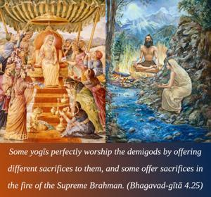
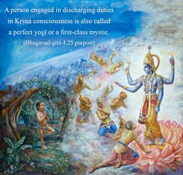
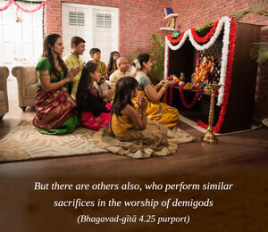
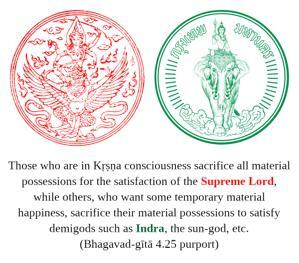
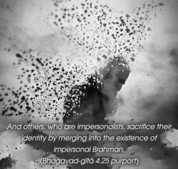

Some yogīs perfectly worship the demigods by offering different sacrifices to them, and some offer sacrifices in the fire of the Supreme Brahman.





As described above, a person engaged in discharging duties in Kṛṣṇa consciousness is also called a perfect yogī or a first-class mystic. But there are others also, who perform similar sacrifices in the worship of demigods, and still others who sacrifice to the Supreme Brahman, or the impersonal feature of the Supreme Lord. So there are different kinds of sacrifices in terms of different categories. Such different categories of sacrifice by different types of performers only superficially demark varieties of sacrifice. Factually sacrifice means to satisfy the Supreme Lord, Viṣṇu, who is also known as Yajña. All the different varieties of sacrifice can be placed within two primary divisions: namely, sacrifice of worldly possessions and sacrifice in pursuit of transcendental knowledge. Those who are in Kṛṣṇa consciousness sacrifice all material possessions for the satisfaction of the Supreme Lord, while others, who want some temporary material happiness, sacrifice their material possessions to satisfy demigods such as Indra, the sun-god, etc. And others, who are impersonalists, sacrifice their identity by merging into the existence of impersonal Brahman. The demigods are powerful living entities appointed by the Supreme Lord for the maintenance and supervision of all material functions like the heating, watering and lighting of the universe. Those who are interested in material benefits worship the demigods by various sacrifices according to the Vedic rituals. They are called bahv-īśvara-vādī, or believers in many gods. But others, who worship the impersonal feature of the Absolute Truth and regard the forms of the demigods as temporary, sacrifice their individual selves in the supreme fire and thus end their individual existences by merging into the existence of the Supreme. Such impersonalists sacrifice their time in philosophical speculation to understand the transcendental nature of the Supreme. In other words, the fruitive workers sacrifice their material possessions for material enjoyment, whereas the impersonalist sacrifices his material designations with a view to merging into the existence of the Supreme. For the impersonalist, the fire altar of sacrifice is the Supreme Brahman, and the offering is the self being consumed by the fire of Brahman. The Kṛṣṇa conscious person, like Arjuna, however, sacrifices everything for the satisfaction of Kṛṣṇa, and thus all his material possessions as well as his own self – everything – is sacrificed for Kṛṣṇa. Thus, he is the first-class yogī; but he does not lose his individual existence.